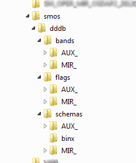
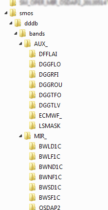

| File Format Updates | |
The data format for SMOS products supported by SMOS box is the Earth Explorer Ground Segment File Format
(EE-Format).
This data format consists of an ASCII XML header file (*.HDR) and a binary data block file (*.DBL).
The binary data structures contained in the data block file are described in the schema-files that are available
from ESA.
This approach allows software reading SMOS files to automatically decode the data correctly.
The SMOS Product Reader uses a dynamic approach to adapt the data structures read from the product file to the data format used in BEAM and displayed in Visat. This dynamic approach is implemented by using a set of descriptor files for each product and file version that define the content of the product and the way the data is extracted from the EE files.
This large set of versioned descriptor files is bundled in a Data Descriptor Data Base (DDDB). The Product Reader extracts the schema information from the SMOS-EE header file and consults the DDDB about the structure and content of the product to be read.

The root directory for the DDDB in the example above is called dddb. It contains three sub-folders: bands, flags and schemas that contain the settings for the bands, flags and the schema files. Each of these folders contains two sub-folders for MIRAS (MIR_) and auxiliary data (AUX_) product data file descriptors. These folders contain a further sub-division according to the product type:
Each of the product type directories contains the versioned descriptor files for this product type.
The standard content of the DDDB is contained as a Java resource and shipped with the SMOS-Box software. This set of band and flag descriptors is thoroughly tested and compliant with all file format versions including and prior to the latest version noted in the software change notes.
In some circumstances it is desirable to change the default product descriptors. The main reason is that this feature allows user to adapt to EE file format changes without the need to wait for a new software release.
The first step consists in setting up the structure of the external DDDB. This is done by simply setting up a directory structure following the DDDB structure described above. It is not necessary to create all directories, it is sufficient to just add the paths to the descriptor files that should be added or overwritten.
In a second step, the new configuration files have to be put in the corresponding location. Updated schema files have to be stored in the schemas/MIR_/ or schemas/AUX_/ subdirectories, updated band or flag descriptor files in the appropriate directory tree.
As a last step, the new DDDB resources need to be registered in BEAM. This is realised using the BEMA configuration. The Visat/BEAM main configuration file is locate at ${BEAM_HOME}/config/beam.config. To register the additional DDDB resources, please add a key/value pair to the config that configures the additional DDDB entries. The key is org.esa.beam.smos.dddbDir, the value of this property must be the absolute path to the root directory of the external DDDB extension.
An example:
org.esa.beam.smos.dddbDir = /home/tom/smos/dddb
The external DDDB resources are treated as additional resource location which are checked in the first place. If a requested resource could not be located in the external DDDB, the internal DDDB is used as fallback. This behaviour allows also to override the product-descriptors shipped with BEAM.